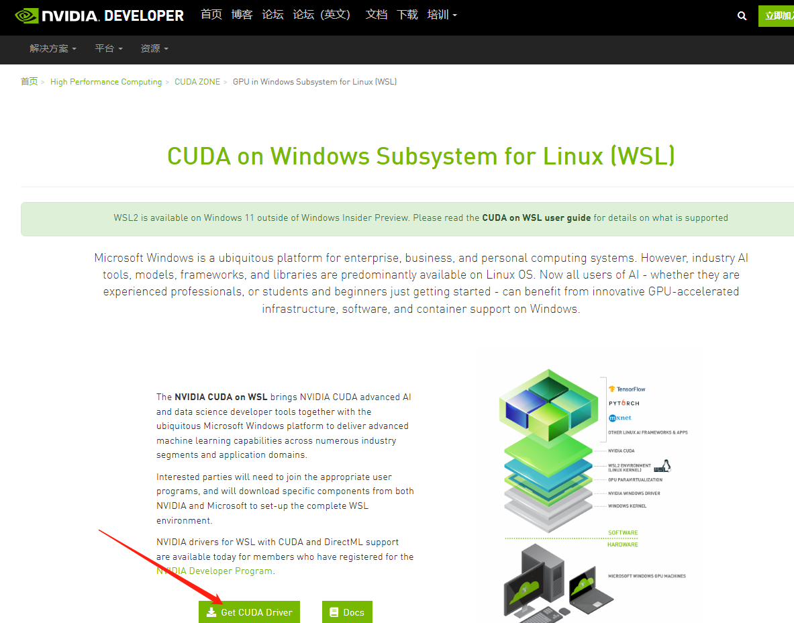
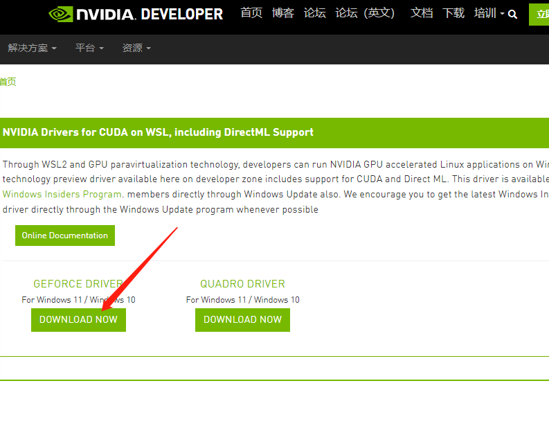

黑暗森林DF显卡开图(WSL2)
所需工具
- Windows电脑
- 10系以上显卡
- 网络
操作过程
- 升级Windows系统为预览版
- 安装WSL2内核、安装或升级WSL ubuntu为WSL2
- 安装显卡的WSL驱动
- 下载ubuntu上必要的工具
- 安装ubuntu的cuda工具
- 下载源码
- 编译
- 执行
- 修改浏览器设置
- 成功开图
一、升级Windows系统为预览版或Windows11
为了在WSL2 上启用NVIDIA CUDA，需要将系统升级为Windows 10 的 Windows 预览体验计划或者Windows 11
对于Windows 10，需要先注册 Windows预览体验计划，并升级预览体验成员版本
需要升级为windows10预览版内部版本 19044.1263 或更高版本
可以按照微软官方的步骤进行注册升级
https://insider.windows.com/zh-cn/getting-started#register
二、安装WSL2内核以及Ubuntu
在升级为预览版以后WSL2就可以支持调用显卡资源，安装WSL2以及Ubuntu可以使用命令一键安装，也可以手动逐个安装
1. 完整的安装步骤
可以使用官网步骤进行下载并安装
https://docs.microsoft.com/zh-cn/windows/wsl/install
2. 一键安装
也可以使用命令行进行简便安装
1 | wsl --install |
此命令将启用所需的可选组件，下载最新的 Linux 内核，将 WSL 2 设置为默认值，并安装 Linux 发行版（默认安装 Ubuntu）。
三、安装WSL-Cuda驱动
由于系统默认不提供显卡-WSL2的驱动，所以需要自行下载驱动，可以从英伟达官网进行下载
https://developer.nvidia.com/cuda/wsl
1. 选择Get CUDA Driver
2. 下载
根据显卡型号选择对应驱动

3. 安装
下载后，按默认方法安装即可
四、Ubuntu上下载必要工具
由于接下来需要编译代码，所以需要安装一系列的工具进行编译
注意:如果已经有编译好的df-explorer可以跳过
1. 设置密码
新下载的Ubuntu需要等待安装一小会后，设置用户名及其密码
设置用户名及其密码的过程需要注意:
- 输入用户名后回车即可
- 输入密码时屏幕不显示字符
- 输入完成后直接回车即可
- 再次输入密码即可进入Ubuntu系统中
2. 安装工具
这一步使用命令行进行安装，安装需要良好的网络环境
国内用户可以选择国内镜像源安装，速度可达3MB每秒
输入命令后可能需要输入密码，密码为上一小步设置的密码
1 | sudo apt install -y git libgmp-dev cmake openssl libssl-dev nvidia-cuda-toolkit |
五、下载CUDA工具包
为了在Ubuntu下编译CUDA的程序，需要安装CUDA工具包
所需的安装包可以在英伟达官网链接中获取(官网中同样是通过命令行的方式获取)
官网链接
这一步需要依次执行下列命令
1 | wget https://developer.download.nvidia.com/compute/cuda/repos/wsl-ubuntu/x86_64/cuda-wsl-ubuntu.pin |
1 | sudo mv cuda-wsl-ubuntu.pin /etc/apt/preferences.d/cuda-repository-pin-600 |
1 | wget https://developer.download.nvidia.com/compute/cuda/11.5.1/local_installers/cuda-repo-wsl-ubuntu-11-5-local_11.5.1-1_amd64.deb |
1 | sudo dpkg -i cuda-repo-wsl-ubuntu-11-5-local_11.5.1-1_amd64.deb |
1 | sudo apt-key add /var/cuda-repo-wsl-ubuntu-11-5-local/7fa2af80.pub |
1 | sudo apt-get update |
1 | sudo apt-get -y install cuda |
如果所有命令均无出错，可以视为安装成功
六、下载源码
使用Git工具下载最新的df-explorer源码
1. 下载core源码
1 | git clone https://github.com/guild-w/df-explorer.git |
2. 进入到第三方插件文件夹
1 | cd df-explorer/thirdparty |
3. 下载CGBN源码
1 | git clone https://github.com/NVlabs/CGBN.git |
4. 下载workflow源码
1 | git clone https://github.com/sogou/workflow.git |
七、编译
编译源码需要使用到之前下载的工具包，同样是执行命令
1. 编译workflow
1 | cd workflow && make |
2. 回到df-explorer目录
1 | cd ../../ |
3. 创建build文件夹并进入
1 | mkdir build && cd build |
4. 编译Release版df-explorer
1 | cmake .. -DCMAKE_BUILD_TYPE=Release |
最后在文件夹中生成df-explorer文件，可以使用ls命令查看
1 | ls |
出现
1 | CMakeCache.txt CMakeFiles Makefile cmake_install.cmake df-explorer samples |
里面的df-explorer就是最终的可执行文件
八、运行df-explorer
成功编译了df-explorer后，可以使用./def-explorer的方式运行软件
1 | ./df-explorer |
如果成功出现以下的提示则为成功(运行成功后界面不可关闭，否则程序将中断)
1 | cuda block size :128 |
九、浏览器开启不安全内容权限
由于DF游戏网页采用HTTPS协议，但是开图程序使用http协议，在默认的浏览器设置中不可以在HTTPS的网页中带有HTTP协议的请求
所以需要修改浏览器设置，并对DF的游戏网页设置不安全内容权限
1. chrome
对于Chrome用户可以访问以下链接设置不安全内容权限
1 | chrome://settings/content/insecureContent |
在”允许显示不安全内容”的栏中添加DF网址后刷新网页即可
2. Edge
对于Edge用户可以访问以下链接设置不安全内容权限
1 | edge://settings/content/insecureContent |
在”允许”的栏中添加DF网址后刷新网页即可
十、remote-explorer插件添加链接
由于是本机链接，所以添加如下链接即可开图
1 | http://localhost:8880/explore |